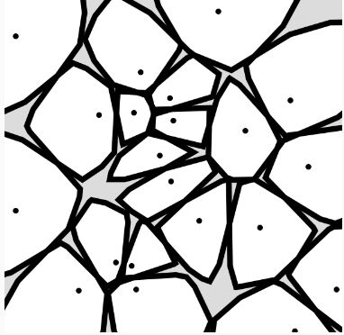

在〈勢力的交集（一）〉已經完成了凸多邊形交集的計算任務，接下來要計算出各點的勢力範圍，首先某點面對另一點時，自己能擁有的勢力範圍：
function domain(me, p, sqSize) {
const sq = polygonSquare(sqSize);
const halfS = sqSize / 2;
const v = p5.Vector.sub(p, me);
const mp = p5.Vector.add(p, me).mult(0.5);
const offset = p5.Vector.sub(mp, v.normalize().mult(halfS));
const a = atan2(v.y, v.x);
return polygonTranslate(polygonRotate(sq, a), offset.x, offset.y);
}
計算的方式很簡單，轉動正方形至其中一個邊至與中垂線平行，然後平移至邊成為中垂線；接著，對於某個細胞，若已經決定出它面對各點時的全部正方形領域，計算出交集的結果：
function cell(domains) {
let c = domains[0]
for(let i = 1; i < domains.length; i++) {
c = convexIntersection(c, domains[i]);
}
return c;
}
然後就可以用來計算出 Voronoi 圖：
function voronoi(points) {
const xs = points.map(p => p.x);
const ys = points.map(p => p.y);
const sqSize = max(max(xs) - min(xs), max(ys) - min(ys));
const sq = polygonSquare(sqSize);
const cells = [];
for(let i = 0; i < points.length; i++) {
const me = points[i];
const other = points.slice(0, i).concat(points.slice(i + 1));
const domains = other.map(p => domain(me, p, sqSize));
cells.push(cell(domains));
}
return cells;
}
底下是個範例，為了讓事情有趣一些，加了滑鼠位置作為其中一個點，以便移動滑鼠來操控其中一個細胞的位置，細胞一開始的初始方塊大小只要夠大就可以了，這邊 x 座標、y 座標差距最遠的值來作為初始方塊大小：
有趣的是，如果你改用其他的凸多邊形做為交集，可以構成不同的圖案，例如用圓來交集，會產生下圖，你可以自己試試看。

在〈Worley 雜訊（二）〉提到的九宮格方法，也可以套用在這邊，只要畫分為網格，並在每格中散佈點就可以了：
function cellPoints(cellWidth, seed) {
randomSeed(seed);
const rows = floor(height / cellWidth);
const columns = floor(width / cellWidth);
const range = [cellWidth * 0.15, cellWidth * 0.85];
const points = [];
for(let r = 0; r < rows; r++) {
points.push([]);
for(let c = 0; c < columns; c++) {
points[r][c] = createVector(random(range[0], range[1]) + c * cellWidth, random(range[0], range[1]) + r * cellWidth);
}
}
return points;
}
function voronoi(cellWidth, seed = random(255)) {
const idxes = [
[-1, -1], [0, -1], [1, -1],
[-1, 0], [1, 0],
[-1, 1], [0, 1], [1, 1]
];
const points = cellPoints(cellWidth, seed);
const cells = [];
for(let r = 0; r < points.length; r++) {
for(let c = 0; c < points[r].length; c++) {
const me = points[r][c];
const other = idxes.map(idx => {
const nr = points[idx[1] + r];
return nr === undefined ? nr : nr[idx[0] + c];
}).filter(p => p);
const domains = other.map(p => domain(me, p, 3 * cellWidth));
cells.push(cell(domains));
}
}
return cells;
}
來個 30x30 個細胞的範例，看來就像馬賽克拼接：